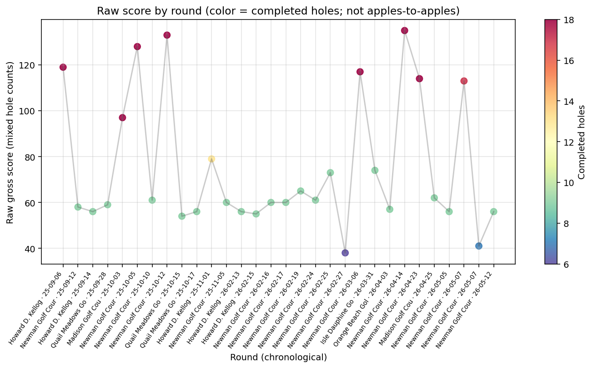
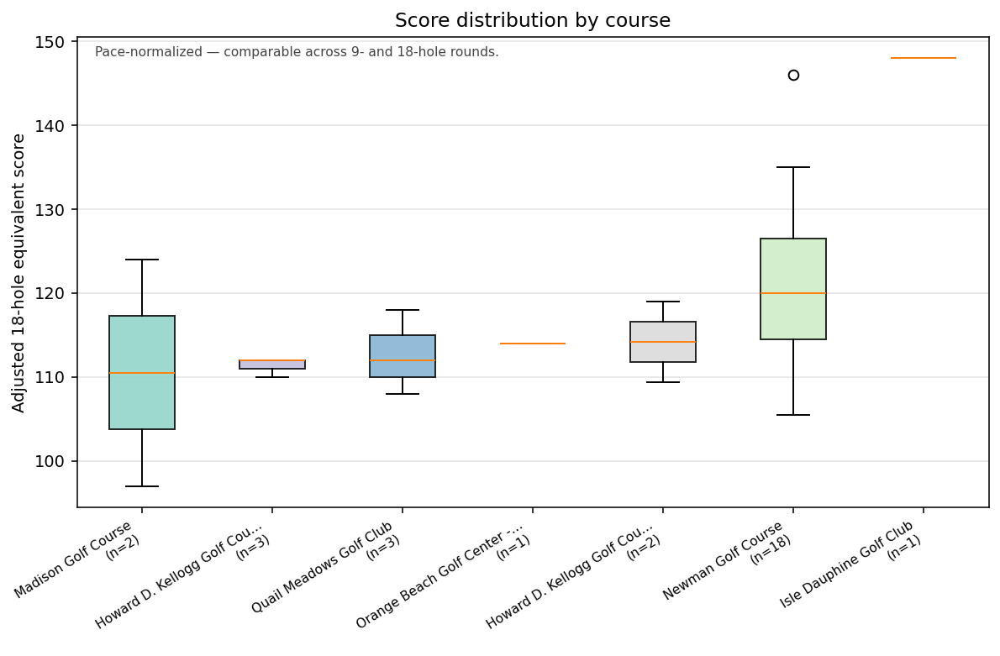
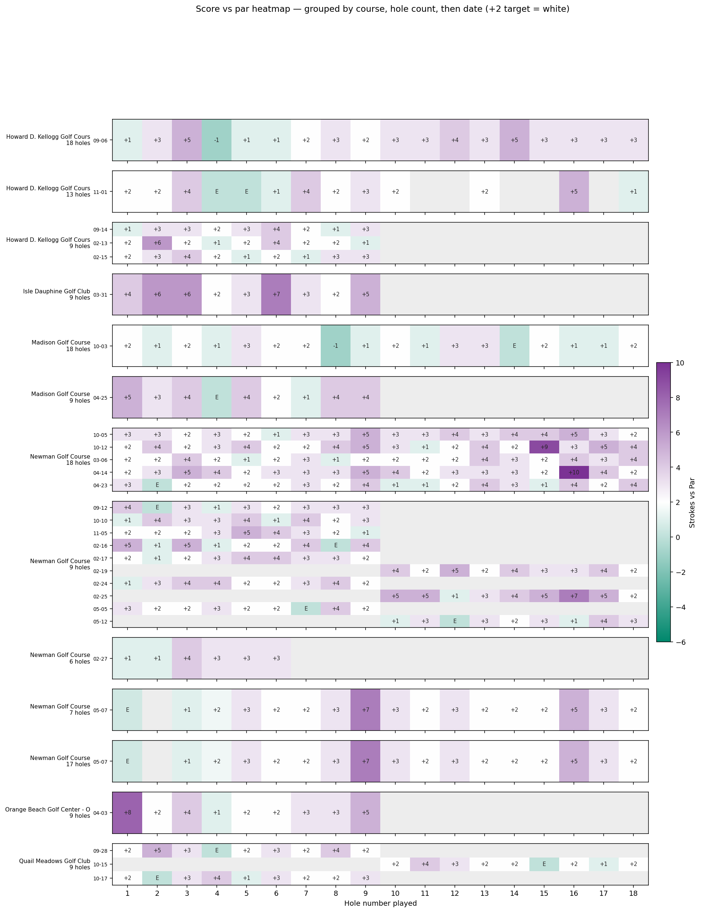
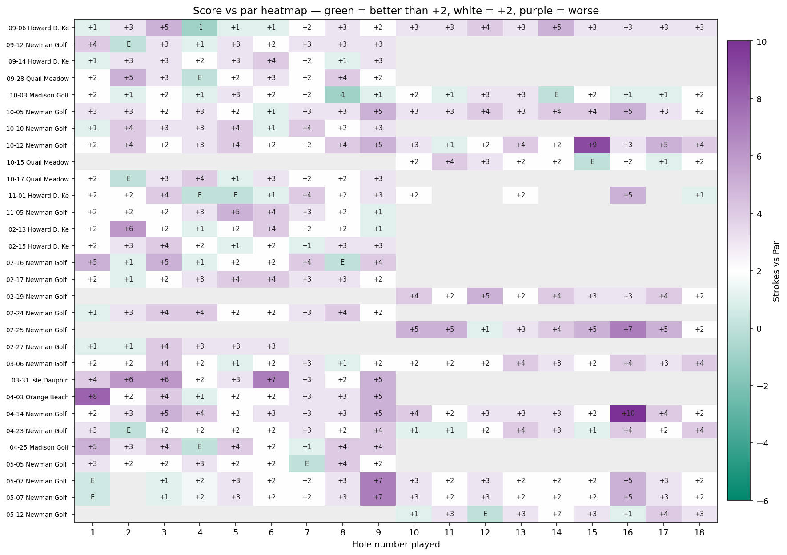
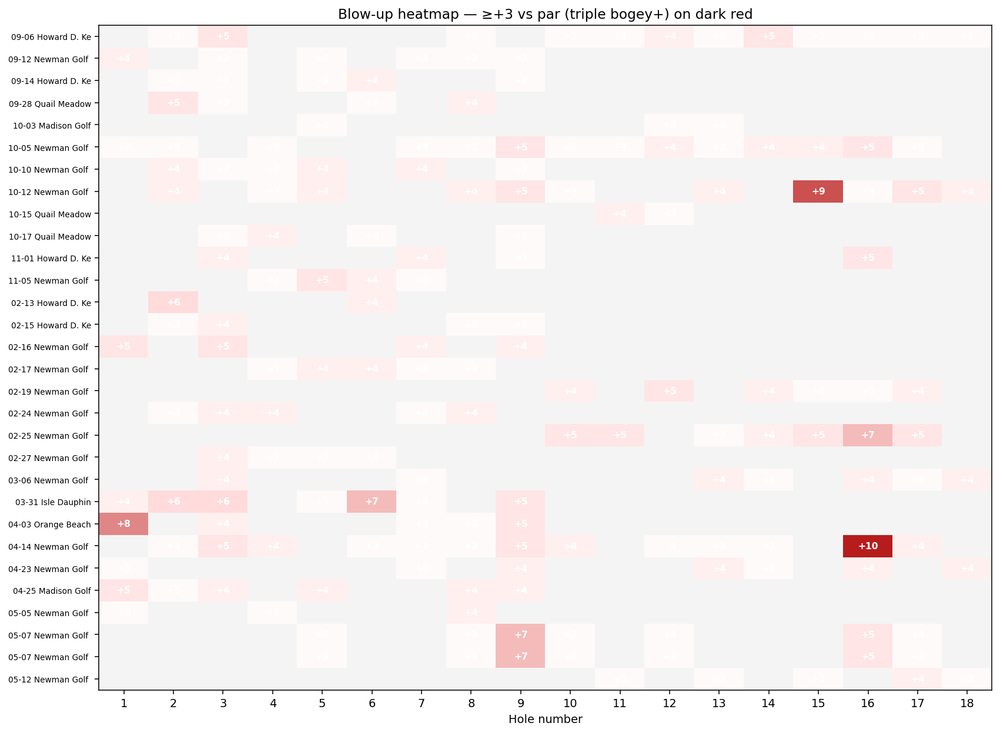

Canonical public dashboard for personal Golf Pad rounds—static chart exports organized by analytical view. Live parsing and skill metrics arrive with processed exports.
Raw score by round with hole labels—primary trend line across recorded rounds.

Front/back nine bests and benchmark checks against known standout rounds.
Once Golf Pad export is parsed, this dashboard will compare recorded front/back nine scores against the Kellogg Championship front 9 benchmark: 51. Until then, no automated best-nine table is shown—only the declared target above.
Recorded rounds and nine-hole splits will populate here after
data/processed/ is built from export CSVs.
How scores spread across courses—stepping stone toward per-course histograms.

Score vs. par patterns and blow-up hole concentration across the bag.



Putting, approach, scrambling, and strokes-gained style panels—reserved for parsed shot and stat exports.